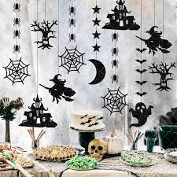
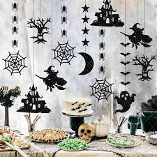

Historia de Halloween
La historia de Halloween tiene profundas raíces en las festividades celtas, específicamente en la festividad de Samhain. Samhain se celebraba en la antigua Irlanda, Escocia y Gales alrededor del 31 de octubre y marcaba el fin del verano y el comienzo del invierno.
Los celtas creían que en Samhain, el mundo de los vivos y los muertos se fusionaba, y encendían hogueras y usaban máscaras para ahuyentar a los espíritus malignos.
Con la expansión del Imperio Romano, las influencias romanas se mezclaron con Samhain. La tradición de "trick-or-treat" podría tener sus raíces en la práctica romana de ofrecer dulces y comida a los muertos.
En el siglo VII, la Iglesia Católica introdujo el Día de Todos los Santos (All Saints' Day) el 1 de noviembre, seguido por el Día de los Difuntos (All Souls' Day) el 2 de noviembre. La iglesia intentó cristianizar las festividades paganas, y Samhain se convirtió en la víspera de la fiesta de Todos los Santos, conocida como "All Hallows' Eve," que con el tiempo se contrajo a "Halloween."
A medida que los inmigrantes europeos, especialmente los irlandeses, se establecieron en América del Norte, llevaron consigo las tradiciones de Halloween. En América, Halloween se convirtió en una festividad más comúnmente asociada con juegos, travesuras y disfraces.
Hoy en día, Halloween es una de las festividades más populares en América del Norte y se ha expandido a otras partes del mundo. La celebración incluye disfraces, decoraciones espeluznantes, fiestas, dulces y, en algunos casos, la creencia en fenómenos paranormales y la actividad de los espíritus.
También se ha convertido en un tema de interés cultural y comercial, con películas, series de televisión y eventos relacionados con Halloween.
Ideas de Disfraces
Encuentra inspiración para tu disfraz de Halloween, desde clásicos como vampiros hasta opciones creativas.
Decoraciones Espeluznantes
Aprende a decorar tu hogar o fiesta con temas de Halloween, desde calabazas talladas hasta espíritus y fantasmas.
 

Recetas Terroríficas
Fondue de queso en calabazas
INGREDIENTES:
- 6 cucharadas de harina de maíz
- 600 ml de vino blanco
- 3 dientes de ajo machacados
- 400 ml de nata
- 600 g de queso gruyere rallado
- 600 g de queso cheddar maduro
- 1 calabaza grande, vaciada
- Precalienta el horno a 180°C (ventilador de 160°C). Coloca la calabaza en el horno durante 30 minutos para que se caliente por completo.
- En una sartén grande, mezcla la maicena, el vino blanco y el ajo, seguido de la nata y los quesos. Revuelve a fuego medio hasta que el queso se derrita.
- Vierte la fondue en la calabaza, sazona con pimienta y sirve con pan crujiente y pepinillos para mojar.
Salchichas momia con hojaldre
INGREDIENTES:
- 10 salchichas tipo chipolatas
- 320 g de hoja de masa quebrada ya laminada
- 1 huevo mediano, batido
- 1 cucharadita de mostaza amarilla
- Precalienta el horno a 200 °C (ventilador de 180 °C). Desenrolla la masa y córtala a lo largo de un extremo corto a otro para crear 10 tiras. Envuelve una tira alrededor de cada salchicha, dejando un espacio en la parte superior para las "caras". Coloca las momias en una bandeja para hornear forrada con papel de horno. Enfría durante 20 minutos.
- Unta la masa con huevo. Hornea de 25 a 30 minutos, hasta que esté dorada la masa. Deja enfriar un poco y luego dibuja los "ojos" con mostaza sobre la salchicha. Sirve con más mostaza y ketchup, si lo deseas.
Fantasmas de chocolate blanco
INGREDIENTES:
- 150 g de chocolate blanco, picado
- 15 g de chocolate con leche o negro
- 6 palitos de piruleta o palitos de pretzel recubiertos de chocolate
- Pon el chocolate blanco en un recipiente apto para microondas. Calienta en el microondas a máxima potencia durante ráfagas de 20 segundos hasta que se derrita y quede suave.
- Mientras tanto, forra una bandeja para hornear con papel de horno. Vierte 1 cucharada de chocolate blanco derretido sobre el papel, con el dorso de una cucharadita dale forma de fantasma con una cabeza, una cola afilada y dos brazos.
- Coloca una piruleta o un palito de pretzel sobre cada fantasma, hasta la mitad del cuerpo, y vierte un poco más de chocolate para asegurarlo.
- Derrite el chocolate negro en otro bol como antes. Con un palito de cóctel, pon pequeñas gotas sobre los fantasmas para hacer los ojos y la boca. Enfría hasta que esté sólido.